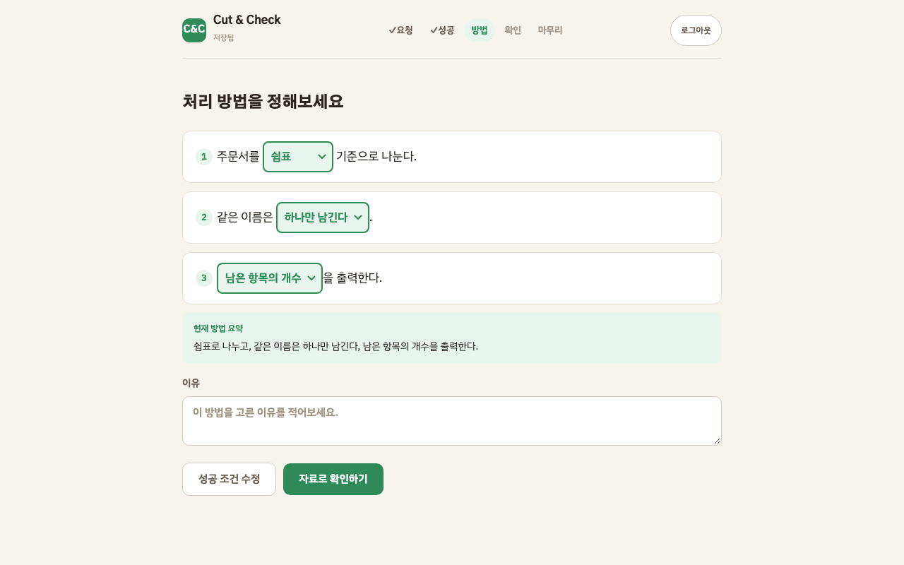

Cut & Check
9월 진행 · 10월 계획
산학협력실무 · 2026.10.03
'여기서 깨졌다'고 말할 수 있게 만든다."
시작 비용은 0으로, 판단은 하나도 대신하지 않는 방식으로.
기존 코딩 교육
빈 편집기 → 문법 오류로 막힘
가이드 코드 → 베껴 쓰기
정답 채점 → 답 추측
AI "잘했어요!" → 인정이 싸구려
Cut & Check
선택형 빈칸 → 시작 비용 0
방법은 안 적힘 → 직접 정함
시스템이 채점 안 함 → 학생이 판정
칭찬은 타이밍만 → 말은 선생님이
빈 화면 대신,
문장의 빈칸을 고른다
코드를 치지 않습니다.
세 문장의 빈칸을 선택해서 방법을 만듭니다.
결과를 보여주고, "내가 정한 성공 조건을 지켰는가"
학생이 직접 판정합니다.

정답률 대신,
지금 누구부터 가야 하는가
점수·순위·소요 시간은 보여주지 않습니다.
저장조차 하지 않습니다.
조용히 막힌 학생, 칭찬 타이밍, 위험군만
보여줍니다.

블록에서 문장으로 — 왜 바꿨는가
고민 1: 블록 조립이 목표인가?
기존 프로토타입은 블록을 드래그해서 순서를 만드는 구조였다. 그런데 "순서 맞추기"가 수업 목표가 아니었다. 목표는 "무엇을 성공으로 정의하고, 왜 이 방법인지 설명하는 것"이었다. 블록 조립은 이걸 가리고 있었다.
고민 2: 학생이 판단하고 있는가?
블록을 올바른 순서로 놓으면 "통과"되는 구조에서, 학생은 결국 정답 순서를 추측하고 있었다. 판단이 아니라 맞추기였다. 문장 빈칸으로 바꾸면 "순서"가 사라지고 "선택의 이유"만 남는다.
고민 3: 강사가 뭘 봐야 하는가?
블록 순서는 강사에게도 의미가 없었다. 강사가 봐야 하는 건 "이 학생이 성공을 어떻게 정의했고, 깨졌을 때 뭐라고 판정했는가"였다. 대시보드를 정답률이 아니라 판단 기록 중심으로 재설계했다.
고민 4: 서버 없이도 수업이 되는가?
학교 와이파이는 끊긴다. 서버가 필수면 끊긴 순간 수업이 끝난다. 그래서 서버는 기록의 조건이 아니라 사본으로 설계했다. localStorage 우선, Supabase는 있으면 쓰고 없으면 로컬로.
고민에서 나온 결정
| 고민 | 결정 | 결과 |
|---|---|---|
| 블록이 목표를 가린다 | 블록 → 문장 빈칸 전환 | sentence.html + runSentence 엔진 |
| 학생이 추측하고 있다 | 채점 제거, 학생 판정 도입 | 지켰다/못했다/어렵다 3선택 + 근거 |
| 강사가 순서를 본다 | 정답률 대신 개입 순서 | 교실 → 3탭 대시보드 |
| 서버 없으면 끝난다 | 오프라인 우선 + Supabase 사본 | localStorage 우선, RLS 보안 |
| 매번 같은 문제 | AI 미션 생성 | 수업 내용 입력 → LLM 맞춤 미션 |
12일간 집중 개발 (9/22~10/3)
| 날짜 | 작업 | 산출물 |
|---|---|---|
| 9/22 | 블록 → 문장 입력형 전환 | sentence.html, runSentence, 미션 3개, 이벤트 9종 |
| 9/23 | 문서 정비 + 디자인 통일 | 테크스펙, 유저 플로우, README, 강사 디자인 |
| 9/24 | 배포 인프라 | Vercel + GitHub 자동 배포 |
| 9/25 | 인증 + 교실 시스템 | Supabase Auth, 회원가입, 교실 생성/참여, RLS |
| 9/26 | AI 미션 생성 | LLM API 연동, few-shot 프롬프트 |
| 9/27 | 강사·학생 화면 재구성 | 강사 3탭, 학생 3탭 (내 미션/풀기/기록) |
| 9/28~ | UX 정비 + 접근성 14건 | 역할 분리, 마무리 판정 리뷰, 내 기록 형식 A |
| 10/1~3 | 3개 에이전트 병렬 검증 | 데이터 흐름 6건 + AI 품질 + 대시보드 갭 수정 |
의도적으로 만들지 않은 것
이 목록이 만든 것보다 중요합니다. 전부 한 번씩 "좋은 아이디어"로 제안됐다가 거절된 것들입니다.
| 안 만든 것 | 이유 |
|---|---|
| 점수 · 레벨 | 칭찬을 기계에 넘기면 사람의 격려가 싸구려가 된다 |
| 정답 채점 | 채점하면 학생이 우리 답을 추측하기 시작한다 |
| AI 칭찬 문구 | 타이밍만 알려주고 말은 선생님이 한다 |
| 정답률 · 순위 | 숫자를 띄우면 교사가 줄을 세운다 |
| 다음 행동 추천 | 판단 대행의 가장 흔한 형태 |
| 반 전체 현황 | 옆자리 진도가 보이면 속도 경쟁이 된다 |
score, rank 필드를 저장하면 코드가 예외를 던집니다. 화면에 금지 단어가 뜨면 테스트가 깨집니다.
4개 스프린트
AI 미션 품질 + 미션 형식 확장
현재 "나누고 → 중복 처리 → 세기" 한 유형뿐. 필터링(조건에 맞는 것만 골라내기), 정렬(순서 바꾸기) 유형을 추가한다. LLM 프롬프트를 주제 다양성·한국어 조사·자료 이름 품질 기준으로 개선한다. 강사가 생성 결과를 직접 편집(자료 수정·삭제)할 수 있게 한다.
5명 소규모 파일럿 준비 + 실행
한결·태인·세은·준혁·연서 5명으로 실제 수업 1회 진행. 관찰 항목: 문장 빈칸을 설명 없이 이해하는가? 성공 조건과 방법을 구분하는가? 세 번째 자료의 차이를 자기 선택과 연결하는가? 마무리에서 형식적 문장이 아닌 자기 언어가 나오는가?
강사 실시간 대시보드 + 기록 내보내기
파일럿 관찰 결과 반영. 강사 대시보드에 실시간 자동 새로고침(30초 주기) 추가. 학생 상세에서 문장형 활동(성공 조건·방법·판정·마무리)을 한눈에 보는 뷰. 학생별 기록을 인쇄용 PDF + JSON으로 내보내기. 강사가 수업 중 가장 먼저 봐야 하는 정보 3가지를 파일럿 관찰에서 결정.
10명 수업 + 관찰·설문
소규모 파일럿 결과를 반영해 10명 수업 진행. 사전·사후 설문, 관찰 기록 수집. 강사 인터뷰: 대시보드가 실제로 개입 순서를 결정하는 데 도움이 됐는가? 학생 인터뷰: "내가 정한 성공"이라는 말이 의미가 있었는가? 결과를 11월 보고서에 반영.
파일럿에서 확인할 것
학생 관찰
1. 문장 빈칸의 의미를 강사 설명 없이 이해하는가?
2. "성공 조건"과 "방법"을 구분해서 설명할 수 있는가?
3. 세 번째 자료의 차이를 자신의 선택과 연결하는가?
4. "지키지 못했다" 판정 후 방법을 수정하는가?
5. 마무리에서 형식적 문장이 아닌 자기 언어가 나오는가?
강사 관찰
1. 대시보드를 보고 개입 순서를 실제로 결정하는가?
2. "조용히 막힌 학생"을 대시보드에서 먼저 발견하는가?
3. AI 생성 미션의 품질이 수업에 충분한가?
4. 학생 기록을 보고 피드백을 줄 수 있는가?
5. 45분 안에 미션 생성 → 풀기 → 마무리가 가능한가?
감사합니다
서비스: cut-check-lilac.vercel.app
검증 대시보드: cut-check-lilac.vercel.app/debug
GitHub: tomchaccom/Cut-Check
테크스펙: docs/tech-spec.md